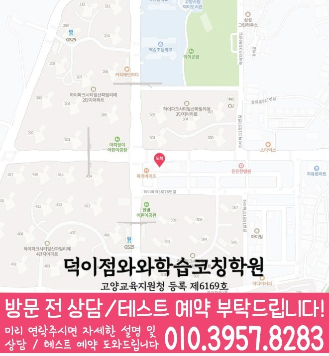

연산 정확도
빠르게 푸는 것보다 실수 없이 풀이 과정을 유지하는지 확인합니다.
LOCAL ELEMENTARY MATH
경기 고양시 덕이지구에서 초등 수학학원을 찾는 학생을 위해 개념 진단, 유형 학습, 오답 재학습, 시험기간 계획까지 정리했습니다.
MATH LEVEL GUIDE
덕이지구 초등 수학학원 선택에서 중요한 것은 현재 학년의 단원 난도와 학생의 약점 원인을 정확히 나누는 것입니다. 초등 수학은 연산 속도만이 아니라 문제 읽기, 개념 언어, 풀이 과정을 차분히 쓰는 습관이 중요합니다.

빠르게 푸는 것보다 실수 없이 풀이 과정을 유지하는지 확인합니다.
문제의 조건과 질문을 구분해 수학 문장을 읽는 습관을 만듭니다.
머릿속으로만 풀지 않고 식과 과정을 차분히 남기는 연습을 합니다.

MATH STRATEGY
덕이지구 초등 수학학원 페이지는 학생의 개념 이해도, 문제 풀이 과정, 오답 원인을 기준으로 상담 방향을 안내합니다.
주소
경기 고양시 일산서구 하이파크2로 40 금문프라자 804호
등록정보
덕이점와와학습코칭학원 · 고양교육지원청 등록 제6169호
초등
중등
고등
KEY SUMMARY
덕이지구 초등 수학학원 상담에서는 경기 고양시 덕이지구의 와와학습코칭센터 덕이점 등록정보와 실제 수학 가능 학년을 기준으로, 수학에 대한 자신감이 낮아 새로운 문제를 시작하기 어려운 학생 상황을 먼저 살펴봅니다. 초등 수학에서는 풀이 이유를 말로 설명하고 스스로 검산하는 기초 습관을 만드는 것이 중요합니다.
등록 주소는 경기 고양시 일산서구 하이파크2로 40 금문프라자 804호이며, 센터정보의 위치안내에는 ‘금문프라자(농협 옆건물, 1층에 컴포즈 카페있는 건물, 7층 헬스장 바로 위 8층입니다)’로 기재되어 있습니다. 방문 전 상담 시간과 실제 동선을 다시 확인하는 것이 좋습니다.
와와학습코칭센터 덕이점 센터정보에 확인된 수학 가능 학년은 초1·초2·초3·초4·초5·초6입니다. 덕이지구 초등 수학학원 상담에서는 해당 학년과 현재 진도를 함께 대조합니다.
센터정보의 초등 학교정보에는 한산초·덕이초·백송초 등이 기재되어 있습니다. 덕이지구 초등 수학학원 상담에서는 재학 학교와 실제 시험 범위를 확인한 뒤 준비 순서를 정합니다.
ANSWER READY
덕이지구 초등 수학학원을 알아볼 때는 광고 문구보다 최근 풀이 기록, 수학 가능 학년, 재학 학교의 시험 범위, 센터 등록정보를 함께 확인해야 합니다. 이 페이지는 제공된 센터정보와 수학에 대한 자신감이 낮아 새로운 문제를 시작하기 어려운 학생 상황을 기준으로 상담 준비 내용을 정리했습니다.
맞힐 수 있는 기본 문제와 멈추는 문제의 난이도 차이를 먼저 살펴봅니다. 덕이지구 초등 수학학원 상담에서는 이 기록을 현재 교재와 함께 비교합니다.
해결 가능한 작은 단계부터 성공 경험을 쌓고 문제 난도를 천천히 조정합니다. 이어서 풀이 이유를 말로 설명하고 스스로 검산하는 기초 습관을 만드는 것을 주간 계획에 반영합니다.
센터정보의 초등 학교정보에는 한산초·덕이초·백송초 등이 기재되어 있습니다. 덕이지구 초등 수학학원 상담에서는 재학 학교와 실제 시험 범위를 확인한 뒤 준비 순서를 정합니다.
피드백을 받을 때 완료한 분량과 함께 막힌 단원, 다음 보완 순서가 구체적인지 확인합니다. 와와학습코칭센터 덕이점의 구체적인 피드백 방식은 상담에서 확인합니다.
학교 진도, 사용 교재, 다음 시험 일정을 확인할 수 있는 자료를 준비합니다. 또한 와와학습코칭센터 덕이점 센터정보에 확인된 수학 가능 학년은 초1·초2·초3·초4·초5·초6입니다. 덕이지구 초등 수학학원 상담에서는 해당 학년과 현재 진도를 함께 대조합니다.
CONSULTING CHECKLIST
학교 진도, 사용 교재, 다음 시험 일정을 확인할 수 있는 자료를 준비합니다. 맞힐 수 있는 기본 문제와 멈추는 문제의 난이도 차이를 먼저 살펴봅니다.
와와학습코칭센터 덕이점 센터정보에 확인된 수학 가능 학년은 초1·초2·초3·초4·초5·초6입니다. 덕이지구 초등 수학학원 상담에서는 해당 학년과 현재 진도를 함께 대조합니다.
센터정보의 초등 학교정보에는 한산초·덕이초·백송초 등이 기재되어 있습니다. 덕이지구 초등 수학학원 상담에서는 재학 학교와 실제 시험 범위를 확인한 뒤 준비 순서를 정합니다.
수학에 대한 자신감이 낮아 새로운 문제를 시작하기 어려운 학생이라면 해결 가능한 작은 단계부터 성공 경험을 쌓고 문제 난도를 천천히 조정합니다. 상담에서는 풀이 이유를 말로 설명하고 스스로 검산하는 기초 습관을 만드는 것을 우선 목표로 정합니다.
PARENT REVIEW
덕이지구 초등 수학학원 상담 과정에서 학부모가 자주 확인한 관리 기준과 후기를 정리했습니다.
덕이지구 초등 수학학원 상담에서 아이가 막히는 단원과 문제 유형을 구체적으로 알 수 있었습니다.
학부모오답을 꼼꼼하게 관리해 주셔서 같은 실수를 줄일 수 있었습니다.
학부모아이의 취약한 부분을 정확히 찾아 보완해 주셨습니다.
학부모궁금한 점을 문의하면 빠르고 친절하게 답변해 주십니다.
학부모학습 습관이 잡히면서 공부하는 시간이 자연스럽게 늘었습니다.
학부모아이가 스스로 부족한 부분을 찾아 공부하기 시작했습니다.
학부모FAQ
초등 수학학원 상담 전 많이 묻는 내용을 정리했습니다.
덕이지구에서 초등 수학 학습코칭 상담을 준비할 때는 현재 진도, 최근 오답 유형, 집에서 공부 가능한 시간, 시험 대비 목표를 함께 정리하면 관리 방향을 더 정확히 잡을 수 있습니다.
덕이지구 초등 수학학원 상담에서는 현재 성취도, 학교 진도, 과제 수행 습관, 반복되는 오답 유형을 먼저 확인합니다. 이후 학생에게 필요한 보완 순서와 주간 학습량을 정리합니다.
덕이지구에서 초등 수학학원을 비교할 때는 단순 진도보다 약점 진단, 과제 피드백, 시험 전 복습 루틴이 실제로 관리되는지 확인하는 것이 좋습니다.
가능합니다. 현재 수학 진도와 기초 이해도를 먼저 확인하고, 바로 따라가기 어려운 부분은 우선순위를 정해 복습한 뒤 학교 진도와 연결합니다.
최근 시험지, 현재 교재, 학교 진도, 수행평가 일정, 자주 틀리는 문제를 함께 알려주시면 상담에서 학습 방향을 더 구체적으로 잡을 수 있습니다.
시험 범위와 일정이 확인되면 과목별 우선순위, 복습 횟수, 오답 점검 계획을 평소보다 구체적으로 세웁니다. 세부 운영 방식은 센터 상담에서 확인할 수 있습니다.
SAME LOCAL PAGE
덕이지구 지역의 과목별·학년별 페이지 23개를 목적별로 묶었습니다. 필요한 조합을 펼쳐서 바로 이동해보세요.
초등수학 CONSULTING
초등 수학은 연산 속도만이 아니라 문제 읽기, 개념 언어, 풀이 과정을 차분히 쓰는 습관이 중요합니다.